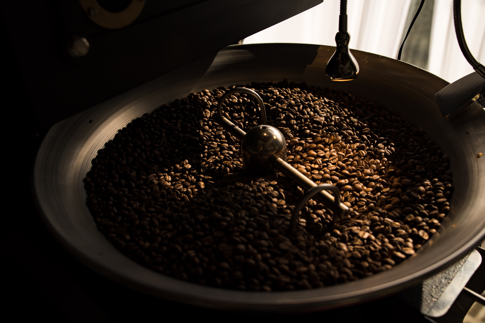

Upland Coffee LLC was founded by Moxie Craig and Sam Robinson in December of 2022. Upland Coffee began when we moved to a small town in Central Vermont.
Moxie had experience working in beautifully run coffee shops, and slowly was able to transition Sam from his folgers, to beautiful and dynamic, single origin coffees that Moxie had grown to love. After a year of home roasting and with a recently torn ACL injury, Upland was born to give Sam and Moxie a winter project to work on with one another during Moxie's recovery.